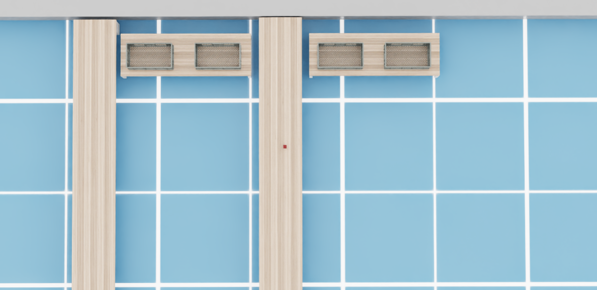

a_star_splicing.cpp (Legado v1.0 - Planejador Dinâmico)
O nó AStarSplicing implementa um planejador de caminho capaz de reagir a mudanças no ambiente. Diferente do A* estático, ele possui uma lógica de Replanejamento Local, permitindo que o robô contorne obstáculos novos sem descartar todo o progresso da rota anterior.
Warning
Este código é legado. Tem um erro que não quero resolver porque não é necessário agora e tem coisas mais importantes para fazer no código.
Inicialização e Parâmetros
Assim como o A*, este nó configura a resolução do grid (tamanho da célula) e a Distância de Segurança.
Important
Distância de Segurança (`security_distance`): Este parâmetro define um “raio de proteção” virtual ao redor do robô e do alvo. Ele é crucial para duas funções: 1. Impedir que o robô trace rotas tangenciais que raspem em obstáculos. 2. Definir o ponto de parada: O robô nunca navega até a coordenada exata do alvo (centro do objeto), mas sim até a borda definida por esta distância.
AStarSplicing()
: Node("a_star")
{
this->declare_parameter<double>("path_resolution", 0.05);
this->declare_parameter<double>("security_distance", 0.50);
this->declare_parameter<int>("iterations_before_verification", 10);
distanceToObstacle_ = static_cast<float>(this->get_parameter("path_resolution").get_parameter_value().get<double>());
security_distance = static_cast<float>(this->get_parameter("security_distance").get_parameter_value().get<double>());
iterations_before_verification = this->get_parameter("iterations_before_verification").get_parameter_value().get<int>();
RCLCPP_INFO(this->get_logger(), "path_resolution is set to: %f", distanceToObstacle_);
RCLCPP_INFO(this->get_logger(), "iterations_before_verification is set to: %d", iterations_before_verification);
this->action_server_ = rclcpp_action::create_server<mobile_manipulation_interfaces::action::Path>(
this,
"path",
std::bind(&AStarSplicing::handle_goal, this, std::placeholders::_1, std::placeholders::_2),
std::bind(&AStarSplicing::handle_cancel, this, std::placeholders::_1),
std::bind(&AStarSplicing::handle_accepted, this, std::placeholders::_1));
decimals = count_decimals(distanceToObstacle_);
publisher_nav_path_ = this->create_publisher<nav_msgs::msg::Path>("visualize_path", 10);
publisher_point_cloud_ = this->create_publisher<sensor_msgs::msg::PointCloud2>("obstacles_intervals", 10);
subscription_odom_ = this->create_subscription<nav_msgs::msg::Odometry>(
"/odom", 10, std::bind(&AStarSplicing::callback_odom, this, std::placeholders::_1));
subscription_ = this->create_subscription<sensor_msgs::msg::PointCloud2>(
"/obstacles_vertices",
10,
std::bind(&AStarSplicing::topic_callback, this, std::placeholders::_1)
);
}
Estruturas de Dados
Utiliza as mesmas estruturas otimizadas de hash espacial para acesso O(1) aos obstáculos.
struct Vertex {
int key;
float x, y, z;
};
struct VertexDijkstra {
float x, y;
float orientation_x, orientation_y, orientation_z;
float orientation_w;
};
struct Destinos {
float x, y, z;
float orientation_x, orientation_y, orientation_z;
float orientation_w;
};
struct Edge {
int v1, v2;
};
struct PairHash {
std::size_t operator()(const std::pair<float, float>& p) const {
auto h1 = std::hash<float>{}(p.first);
auto h2 = std::hash<float>{}(p.second);
return h1 ^ (h2 << 1);
}
};
template <>
struct hash<std::tuple<float, float, float>>
{
size_t operator()(const std::tuple<float, float, float>& t) const
{
size_t h1 = hash<float>()(std::get<0>(t));
size_t h2 = hash<float>()(std::get<1>(t));
size_t h3 = hash<float>()(std::get<2>(t));
return h1 ^ (h2 << 1) ^ (h3 << 2);
}
};
Mapeamento e Grid
O nó converte a nuvem de pontos dinâmica em um mapa de custos discreto (unordered_set).
Discretização: As coordenadas float são arredondadas para o múltiplo mais próximo da resolução (ex: 0.05m).
inline float round_to_multiple(float value, float multiple, int decimals)
{
if (multiple == 0.0) return value;
float result = std::round(value / multiple) * multiple;
float factor = std::pow(10.0, decimals);
result = std::round(result * factor) / factor;
return result;
}
Callback de Obstáculos:
void topic_callback(const sensor_msgs::msg::PointCloud2::SharedPtr msg)
{
std::lock_guard<std::mutex> lock(map_mutex_);
sensor_msgs::PointCloud2ConstIterator<float> iter_x(*msg, "x");
sensor_msgs::PointCloud2ConstIterator<float> iter_y(*msg, "y");
for (; iter_x != iter_x.end(); ++iter_x, ++iter_y)
{
float x = *iter_x;
float y = *iter_y;
std::pair<float, float> index = std::make_pair(
round_to_multiple(x, distanceToObstacle_, decimals),
round_to_multiple(y, distanceToObstacle_, decimals)
);
obstaclesVertices.insert(index);
}
}
Recuperação de Alvo (BFS)
Antes de qualquer planejamento, garante-se que os pontos de início e fim são válidos usando a busca em largura.
Demonstração da Expansão BFS:
Visualização da recuperação de alvo via BFS (vídeo extremamente desacelerado).
Visualização do mapa real. O alvo é o cubo vermelho.

std::pair<std::pair<float, float>, bool> find_nearest_free_point(
std::pair<float, float> origin,
int max_steps)
{
std::pair<float,float> nearest_rounded = std::make_pair(round_to_multiple(std::get<0>(origin), distanceToObstacle_, decimals),
round_to_multiple(std::get<1>(origin), distanceToObstacle_, decimals));
if (obstaclesVertices.find(nearest_rounded) == obstaclesVertices.end())
{
return {origin, true};
}
struct SearchNode {
float dist;
std::pair<float, float> pos;
bool operator>(const SearchNode& other) const {
return dist > other.dist;
}
};
std::priority_queue<SearchNode, std::vector<SearchNode>, std::greater<SearchNode>> pq;
pq.push({0.0f, nearest_rounded});
std::unordered_set<std::pair<float, float>, PairHash> visited;
visited.insert(nearest_rounded);
auto offsets = get_offsets(distanceToObstacle_);
int steps = 0;
while(!pq.empty())
{
if(steps++ > max_steps) break;
auto current_node = pq.top();
pq.pop();
std::pair<float, float> current_pos = current_node.pos;
if (obstaclesVertices.find(current_pos) == obstaclesVertices.end())
{
return {current_pos, true};
}
for(int i = 0; i < 8; i++)
{
float nx = round_to_multiple(current_pos.first + offsets[i][0], distanceToObstacle_, decimals);
float ny = round_to_multiple(current_pos.second + offsets[i][1], distanceToObstacle_, decimals);
std::pair<float, float> neighbor = {nx, ny};
if(visited.find(neighbor) != visited.end()) continue;
visited.insert(neighbor);
float dist_from_origin = std::hypot(neighbor.first - origin.first, neighbor.second - origin.second);
pq.push({dist_from_origin, neighbor});
}
}
return {origin, false};
}
Motor de Busca (A*)
O nó utiliza o algoritmo A* como “motor” para calcular os segmentos de rota. Ele é usado tanto para o caminho inicial quanto para calcular os pequenos desvios (patches) durante a execução.
Características: 1. Heurística Euclidiana: Guia a expansão dos nós em direção ao alvo. 2. Verificação Periódica: A cada N iterações, tenta traçar uma linha reta (“Theta* light”) para encontrar atalhos imediatos.
Visualização da Expansão do Motor de Busca:
Visualização da expansão dos nós
std::pair<std::vector<std::pair<float, float>>, bool> run_a_star(std::pair<float, float> start_tuple, std::pair<float, float> goal_tuple)
{
auto start_search = find_nearest_free_point(start_tuple, 500);
if (!start_search.second)
{
RCLCPP_WARN(this->get_logger(), "START BLOCKED: Robot stuck deep inside obstacles.");
return {};
}
std::pair<float, float> valid_start = start_search.first;
auto goal_search = find_nearest_free_point(goal_tuple, 3000);
if (!goal_search.second)
{
RCLCPP_WARN(this->get_logger(), "GOAL BLOCKED: Destination is unreachable.");
return {};
}
std::pair<float, float> valid_goal = goal_search.first;
if (valid_start == valid_goal)
{
std::vector<std::pair<float, float>> path;
path.push_back(valid_goal);
return {path, true};
}
std::vector<std::pair<float, float>> initial_path = straight_line(valid_start, valid_goal);
if(!initial_path.empty())
{
initial_path.push_back(valid_start);
initial_path.push_back(valid_goal);
return std::make_pair(initial_path, true);
}
struct Node {
std::pair<float, float> parent;
float g_score = std::numeric_limits<float>::infinity();
float f_score = std::numeric_limits<float>::infinity();
bool closed = false;
};
std::unordered_map<std::pair<float, float>, Node, PairHash> nodes;
std::unordered_map<std::pair<float, float>, std::vector<std::pair<float, float>>, PairHash> adjacency_list_tuples;
auto offsets1 = get_offsets(distanceToObstacle_);
float new_x = 0.0, new_y = 0.0;
for (int a = 0; a < 8; a++)
{
new_x = round_to_multiple(std::get<0>(valid_start) + (offsets1[a][0]), distanceToObstacle_, decimals);
new_y = round_to_multiple(std::get<1>(valid_start) + (offsets1[a][1]), distanceToObstacle_, decimals);
std::pair<float, float> neighbor_tuple = std::make_pair(static_cast<float>(new_x), static_cast<float>(new_y));
if (obstaclesVertices.find(neighbor_tuple) == obstaclesVertices.end())
{
adjacency_list_tuples[valid_start].push_back(neighbor_tuple);
}
}
for (int a = 0; a < 8; a++)
{
new_x = round_to_multiple(std::get<0>(valid_goal) + (offsets1[a][0]), distanceToObstacle_, decimals);
new_y = round_to_multiple(std::get<1>(valid_goal) + (offsets1[a][1]), distanceToObstacle_, decimals);
std::pair<float, float> neighbor_tuple = std::make_pair(static_cast<float>(new_x), static_cast<float>(new_y));
if (obstaclesVertices.find(neighbor_tuple) == obstaclesVertices.end())
{
adjacency_list_tuples[neighbor_tuple].push_back(valid_goal);
}
}
auto heuristic = [](const std::pair<float, float>& a, const std::pair<float, float>& b) {
float x1 = std::get<0>(a);
float y1 = std::get<1>(a);
float x2 = std::get<0>(b);
float y2 = std::get<1>(b);
return std::sqrt(std::pow(x2 - x1, 2) + std::pow(y2 - y1, 2));
};
nodes[valid_start].g_score = 0;
nodes[valid_start].f_score = heuristic(valid_start, valid_goal);
struct PairCompare {
bool operator()(const std::pair<float, std::pair<float, float>>& a,
const std::pair<float, std::pair<float, float>>& b) const {
return a.first > b.first;
}
};
std::priority_queue<
std::pair<float, std::pair<float, float>>,
std::vector<std::pair<float, std::pair<float, float>>>,
PairCompare
> open_set;
open_set.push({nodes[valid_start].f_score, valid_start});
int iterations = 0;
while (!open_set.empty())
{
auto current_pair = open_set.top();
open_set.pop();
auto current = current_pair.second;
if (nodes[current].closed) continue;
if (current_pair.first > nodes[current].f_score) continue;
nodes[current].closed = true;
if (current != valid_start && current != valid_goal)
{
for (int a = 0; a < 8; a++)
{
new_x = round_to_multiple(std::get<0>(current) + offsets1[a][0], distanceToObstacle_, decimals);
new_y = round_to_multiple(std::get<1>(current) + offsets1[a][1], distanceToObstacle_, decimals);
std::pair<float, float> neighbor_tuple = std::make_pair(static_cast<float>(new_x), static_cast<float>(new_y));
if (obstaclesVertices.find(neighbor_tuple) == obstaclesVertices.end())
{
adjacency_list_tuples[current].push_back(neighbor_tuple);
}
}
}
if (current == valid_goal)
{
std::vector<std::pair<float, float>> path;
auto current_vertex = current;
path.insert(path.begin(), current_vertex);
while (nodes.find(current_vertex) != nodes.end() && current_vertex != valid_start) {
current_vertex = nodes[current_vertex].parent;
path.insert(path.begin(), current_vertex);
}
return std::make_pair(path, false);
}
if(iterations == iterations_before_verification)
{
iterations = 0;
std::vector<std::pair<float, float>> path1 = straight_line(current, valid_goal);
if(!path1.empty())
{
std::vector<std::pair<float, float>> path;
std::vector<std::pair<float, float>> path_to_current;
auto current_vertex = current;
while (nodes.find(current_vertex) != nodes.end() && current_vertex != valid_start) {
path_to_current.insert(path_to_current.begin(), current_vertex);
current_vertex = nodes[current_vertex].parent;
}
path_to_current.insert(path_to_current.begin(), valid_start);
path.insert(path.end(), path_to_current.begin(), path_to_current.end());
path.insert(path.end(), path1.begin(), path1.end());
return std::make_pair(path, true);
}
}
for (const auto& neighbor : adjacency_list_tuples[current])
{
if (nodes.find(neighbor) != nodes.end() && nodes[neighbor].closed) continue;
float tentative_g_score = nodes[current].g_score + heuristic(current, neighbor);
if (nodes.find(neighbor) == nodes.end() || tentative_g_score < nodes[neighbor].g_score)
{
nodes[neighbor].parent = current;
nodes[neighbor].g_score = tentative_g_score;
nodes[neighbor].f_score = tentative_g_score + heuristic(neighbor, valid_goal);
open_set.push({nodes[neighbor].f_score, neighbor});
}
}
iterations++;
adjacency_list_tuples.erase(current);
}
RCLCPP_WARN(this->get_logger(), "It is not possible to reach the destination.");
return {};
}
Poda de Segurança (Stop Distance)
Após o cálculo do caminho bruto, é necessário aplicar a lógica de parada segura. O caminho original vai até o centro do obstáculo alvo, o que causaria colisão.
A função store_edges_in_path inicia executando um algoritmo de corte:
O algoritmo percorre o caminho de trás para frente (do Goal para o Start).
Calcula a distância euclidiana de cada ponto do caminho em relação ao alvo original.
Assim que encontra um ponto cuja distância é maior ou igual à
security_distance, este ponto é definido como o novo final da trajetória.Todos os pontos subsequentes (que estariam dentro da zona de perigo) são removidos da lista.
Isso garante que o robô pare exatamente na borda de segurança definida no arquivo de parâmetros.
Pós-Processamento e Suavização
Além da poda de segurança, a função store_edges_in_path também aplica o Path Smoothing (atalhos) para remover movimentos em zig-zag desnecessários, gerando uma trajetória mais natural.
Comparativo: Caminho Bruto vs. Suavizado
Filtro de Suavização
void store_edges_in_path(std::vector<std::pair<float, float>>& path, bool straight_line, std::pair<float, float> original_goal)
{
path_points.clear();
path_without_filter.clear();
if (path.empty()) return;
int k = 0;
if (straight_line == false && path.size() >= 2)
{
std::pair<float, float> goal = original_goal;
for (int i = static_cast<int>(path.size()) - 1; i >= 0; --i)
{
float dx = goal.first - path[i].first;
float dy = goal.second - path[i].second;
float dist = std::hypot(dx, dy);
if (dist >= security_distance)
{
if (i + 1 < static_cast<int>(path.size())) {
path.erase(path.begin() + i + 1, path.end());
}
break;
}
}
}
while (k < static_cast<int>(path.size()) - 1)
{
bool shortcutFound = false;
for (int i = static_cast<int>(path.size()) - 1; i > k; i--)
{
std::pair<float, float> A { std::get<0>(path[k]), std::get<1>(path[k]) };
std::pair<float, float> B { std::get<0>(path[i]), std::get<1>(path[i]) };
float ax = std::get<0>(A), ay = std::get<1>(A);
float bx = std::get<0>(B), by = std::get<1>(B);
float dx = bx - ax, dy = by - ay;
float distance = std::sqrt(dx * dx + dy * dy);
if (distance == 0) continue;
float ux = dx / distance;
float uy = dy / distance;
float step = distanceToObstacle_;
float t = 0.0f;
bool obstacleFound = false;
while (t < distance && obstacleFound == false)
{
std::pair<float, float> point;
std::get<0>(point) = ax + t * ux;
std::get<1>(point) = ay + t * uy;
double new_x = round_to_multiple(std::get<0>(point), distanceToObstacle_, decimals);
double new_y = round_to_multiple(std::get<1>(point), distanceToObstacle_, decimals);
std::pair<float, float> neighbor_tuple = std::make_pair(static_cast<float>(new_x), static_cast<float>(new_y));
if (obstaclesVertices.find(neighbor_tuple) != obstaclesVertices.end())
{
obstacleFound = true;
break;
}
t += step;
}
if (obstacleFound == false)
{
path.erase(path.begin() + k + 1, path.begin() + i);
shortcutFound = true;
break;
}
}
if (shortcutFound == true) k++;
else break;
}
if (straight_line == true && !path.empty())
{
auto& last = path.back();
float dx = original_goal.first - last.first;
float dy = original_goal.second - last.second;
float dist_to_orig = std::hypot(dx, dy);
if (dist_to_orig < security_distance)
{
if (path.size() >= 2) {
auto& start = path[0];
float total_dx = original_goal.first - start.first;
float total_dy = original_goal.second - start.second;
float total_dist = std::hypot(total_dx, total_dy);
if (total_dist > security_distance) {
float ux = total_dx / total_dist;
float uy = total_dy / total_dist;
last.first = original_goal.first - (ux * security_distance);
last.second = original_goal.second - (uy * security_distance);
}
}
}
}
for (size_t i = 0; i < path.size() - 1; i++)
{
float start_x = path[i].first;
float start_y = path[i].second;
float end_x = path[i+1].first;
float end_y = path[i+1].second;
float dx = end_x - start_x;
float dy = end_y - start_y;
float dist = std::sqrt(dx * dx + dy * dy);
float ux = (dist > 0) ? (dx / dist) : 0;
float uy = (dist > 0) ? (dy / dist) : 0;
float traveled = 0.0f;
while (traveled < dist)
{
float px = start_x + ux * traveled;
float py = start_y + uy * traveled;
std::pair<float, float> point = std::make_pair(round_to_multiple(px, distanceToObstacle_, decimals), round_to_multiple(py, distanceToObstacle_, decimals));
if(obstaclesVertices.find(point) == obstaclesVertices.end())
{
path_without_filter.push_back(point);
}
traveled += distanceToObstacle_;
}
}
if (!path.empty())
{
path_without_filter.push_back(path.back());
}
for (size_t i = 0; i < path.size(); i++)
{
VertexDijkstra vertex;
vertex.x = std::get<0>(path[i]);
vertex.y = std::get<1>(path[i]);
float dx = 0.0f;
float dy = 0.0f;
bool calculation_possible = false;
if (i < path.size() - 1)
{
const std::pair<float, float>& current_vertex = path[i];
const std::pair<float, float>& next_vertex = path[i + 1];
dx = std::get<0>(next_vertex) - std::get<0>(current_vertex);
dy = std::get<1>(next_vertex) - std::get<1>(current_vertex);
calculation_possible = true;
}
else
{
const std::pair<float, float>& current_vertex = path[i];
dx = original_goal.first - std::get<0>(current_vertex);
dy = original_goal.second - std::get<1>(current_vertex);
if (std::sqrt(dx*dx + dy*dy) > 1e-3) {
calculation_possible = true;
}
}
if (calculation_possible)
{
float distance = std::sqrt(dx * dx + dy * dy);
if (distance > 0.0f) {
dx /= distance;
dy /= distance;
}
Eigen::Vector3f direction(dx, dy, 0.0f);
Eigen::Vector3f reference(1.0f, 0.0f, 0.0f);
Eigen::Quaternionf quaternion = Eigen::Quaternionf::FromTwoVectors(reference, direction);
vertex.orientation_x = quaternion.x();
vertex.orientation_y = quaternion.y();
vertex.orientation_z = quaternion.z();
vertex.orientation_w = quaternion.w();
}
else
{
if (!path_points.empty()) {
vertex.orientation_x = path_points.back().orientation_x;
vertex.orientation_y = path_points.back().orientation_y;
vertex.orientation_z = path_points.back().orientation_z;
vertex.orientation_w = path_points.back().orientation_w;
} else {
vertex.orientation_x = 0.0;
vertex.orientation_y = 0.0;
vertex.orientation_z = 0.0;
vertex.orientation_w = 1.0;
}
}
path_points.push_back(vertex);
}
publisher_dijkstra_path();
}
Execução Dinâmica: Path Splicing
Esta é a principal inovação deste nó em relação ao A* padrão.
Em vez de descartar todo o caminho quando um obstáculo aparece, o nó executa um Reparo Local (Splicing):
Monitoramento: O robô segue o caminho original (previousPath).
Detecção de Ruptura: O algoritmo varre o caminho à frente. Se encontra um obstáculo novo bloqueando o trajeto, identifica o índice do bloqueio ($m$).
Cálculo de Pontes: * Identifica um ponto seguro antes do bloqueio. * Identifica um ponto seguro depois do bloqueio.
Emenda: Executa o motor de busca apenas entre esses dois pontos.
Fusão: O novo segmento curto é inserido no caminho original, substituindo a parte bloqueada.
Demonstração do Replanejamento Dinâmico:
Visualização do Path Splicing (Desvio Dinâmico)
void execute(const std::shared_ptr<rclcpp_action::ServerGoalHandle<mobile_manipulation_interfaces::action::Path>> goal_handle)
{
RCLCPP_INFO(this->get_logger(), "THREAD START: Iniciando Action com Splicing (Reparo Local)...");
const auto goal = goal_handle->get_goal();
auto result = std::make_shared<mobile_manipulation_interfaces::action::Path::Result>();
auto feedback = std::make_shared<mobile_manipulation_interfaces::action::Path::Feedback>();
path_points.clear();
path_without_filter.clear();
previousPath.clear();
std::pair<float, float> goal_pose = {goal->pose.position.x, goal->pose.position.y};
std::pair<float, float> start_pose;
{
std::lock_guard<std::mutex> lock(odom_mutex);
start_pose = {pose_x_, pose_y_};
}
rclcpp::Rate loop_rate(20.0);
bool initial_calculation_done = false;
try {
{
RCLCPP_INFO(this->get_logger(), "Calculando caminho inicial...");
feedback->recalculating_path = false;
std::pair<std::vector<std::pair<float, float>>, bool> a_star_result;
{
std::lock_guard<std::mutex> lock(map_mutex_);
a_star_result = run_a_star(start_pose, goal_pose);
previousPath = a_star_result.first;
if (!previousPath.empty())
{
store_edges_in_path(previousPath, a_star_result.second, goal_pose);
}
}
if (previousPath.empty())
{
RCLCPP_WARN(this->get_logger(), "A* Falhou no caminho inicial! Enviando feedback de erro.");
feedback->recalculating_path = true;
feedback->path.poses.clear();
feedback->path.header.stamp = this->now();
feedback->path.header.frame_id = "world";
goal_handle->publish_feedback(feedback);
}
else
{
feedback->path.poses.clear();
feedback->path.header.stamp = this->now();
feedback->path.header.frame_id = "world";
for (const auto& vertex : path_points)
{
geometry_msgs::msg::PoseStamped pose_stamped;
pose_stamped.header.stamp = this->now();
pose_stamped.header.frame_id = "world";
pose_stamped.pose.position.x = vertex.x;
pose_stamped.pose.position.y = vertex.y;
pose_stamped.pose.position.z = 0.0;
pose_stamped.pose.orientation.x = vertex.orientation_x;
pose_stamped.pose.orientation.y = vertex.orientation_y;
pose_stamped.pose.orientation.z = vertex.orientation_z;
pose_stamped.pose.orientation.w = vertex.orientation_w;
feedback->path.poses.push_back(pose_stamped);
}
RCLCPP_INFO(this->get_logger(), "Sucesso inicial! Publicando feedback com %zu poses.", feedback->path.poses.size());
goal_handle->publish_feedback(feedback);
publisher_dijkstra_path();
initial_calculation_done = true;
}
}
RCLCPP_INFO(this->get_logger(), "Entrando no loop de monitoramento...");
while (rclcpp::ok())
{
{
std::lock_guard<std::mutex> lock(goal_mutex_);
if (active_goal_handle_ != goal_handle)
{
RCLCPP_WARN(this->get_logger(), "Preempção detectada. Encerrando thread.");
return;
}
}
if (goal_handle->is_canceling())
{
RCLCPP_INFO(this->get_logger(), "Cancelamento solicitado.");
result->success = false;
goal_handle->canceled(result);
return;
}
bool path_changed = false;
{
std::lock_guard<std::mutex> lock(map_mutex_);
if (!previousPath.empty()) {
std::pair<float, float> current_robot_pos;
{
current_robot_pos = {pose_x_, pose_y_};
}
previousPath[0] = current_robot_pos;
}
bool obstacleFound = false;
bool found = false;
std::vector<int> intervals;
std::vector<std::pair<std::pair<float, float>, std::pair<float, float>>> pairs;
std::pair<float, float> origin, destination;
std::vector<std::pair<float, float>> finalPath;
std::vector<std::pair<float, float>> test_path;
for(size_t m = 1; m < previousPath.size() - 1; m++)
{
bool is_obstacle = obstaclesVertices.find(previousPath[m]) != obstaclesVertices.end();
if(is_obstacle && !obstacleFound && m > 0)
{
origin = previousPath[m - 1];
intervals.push_back(m - 1);
test_path.push_back(previousPath[m - 1]);
obstacleFound = true;
found = true;
}
if(!is_obstacle && obstacleFound)
{
destination = previousPath[m];
test_path.push_back(previousPath[m]);
pairs.push_back({origin, destination});
obstacleFound = false;
}
}
if(found)
{
publisher_point_cloud(test_path);
feedback->recalculating_path = true;
goal_handle->publish_feedback(feedback);
finalPath.clear();
for(int i = 0; i <= intervals[0]; i++) {
finalPath.push_back(previousPath[i]);
}
for(size_t k = 0; k < pairs.size(); k++)
{
const auto& pair = pairs[k];
std::pair<float, float> p_start = pair.first;
std::pair<float, float> p_end = pair.second;
std::vector<std::pair<float, float>> shortestPath = run_a_star(p_start, p_end).first;
if (!shortestPath.empty()) {
int startIdx = (finalPath.empty() || finalPath.back() != shortestPath[0]) ? 0 : 1;
for(size_t i = startIdx; i < shortestPath.size() - 1; i++) {
finalPath.push_back(shortestPath[i]);
}
}
int nextStart = -1;
for(size_t i = 0; i < previousPath.size(); i++) {
if(previousPath[i] == pair.second) {
nextStart = i;
break;
}
}
size_t copy_until_idx = (k < pairs.size() - 1) ? intervals[k+1] : previousPath.size() - 1;
if(nextStart >= 0) {
for(size_t i = nextStart; i <= copy_until_idx; i++) {
if (i < previousPath.size()) finalPath.push_back(previousPath[i]);
}
}
}
previousPath = finalPath;
path_changed = true;
store_edges_in_path(previousPath, false, goal_pose);
}
}
if (path_changed)
{
feedback->path.poses.clear();
feedback->path.header.stamp = this->now();
feedback->path.header.frame_id = "world";
for (const auto& vertex : path_points)
{
geometry_msgs::msg::PoseStamped pose_stamped;
pose_stamped.header.stamp = this->now();
pose_stamped.header.frame_id = "world";
pose_stamped.pose.position.x = vertex.x;
pose_stamped.pose.position.y = vertex.y;
pose_stamped.pose.position.z = 0.0;
pose_stamped.pose.orientation.x = vertex.orientation_x;
pose_stamped.pose.orientation.y = vertex.orientation_y;
pose_stamped.pose.orientation.z = vertex.orientation_z;
pose_stamped.pose.orientation.w = vertex.orientation_w;
feedback->path.poses.push_back(pose_stamped);
}
feedback->recalculating_path = false;
goal_handle->publish_feedback(feedback);
RCLCPP_INFO(this->get_logger(), "Caminho reparado e enviado via Feedback.");
publisher_dijkstra_path();
}
loop_rate.sleep();
}
}
catch (const std::exception &e)
{
RCLCPP_ERROR(this->get_logger(), "EXCEÇÃO NA THREAD DA ACTION: %s", e.what());
result->success = false;
goal_handle->abort(result);
}
catch (...)
{
RCLCPP_ERROR(this->get_logger(), "EXCEÇÃO DESCONHECIDA NA THREAD DA ACTION.");
result->success = false;
goal_handle->abort(result);
}
}